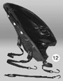
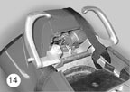
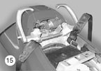
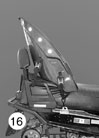
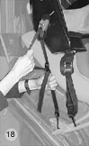
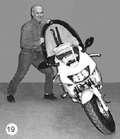

 |
POSITIONING OF THE SEAT
It is an obvious fact that the Ovak maker had to compromise given the various makes of motorcycles and snowmobile. The inclination angle of the seat has been studied carefully to assure comfort for the passenger and good working condition of the ejector system. That is why you will find enclosed with your seat a black closed cell foam part (picture 6) which will allow you to adjust the angle when necessary.
The base of the seat (surface in contact with the seat of the vehicle (see picture 11) must be in an horizontal position. The placement of the footrest on certain vehicles may require an adjustment in height to avoid any contact with the frame of the vehicle.
We recommend to stabilize the vehicle on which the Ovak will be installed before proceeding to do so.
INSTALLATION
1st step: Place the exterior shell on a table covered with a protective surface. Separate the inside shell from the exterior one. Fix the harnessing straps in the footrest slots (2), in the lateral slots for the center (2) and in the back slots (2) which will join the frame under the motorcycle seat.
2nd step: Place the Ovak temporarily on the back section of the vehicle seat (passenger place) so as to visualize (picture 13) where the vinyl fasteners will be anchored.
3rd step: In case the Ovak footrest would be in contact with the frame of the vehicle (mostly the motorcycles), we suggest that you use the closed cell foam included (picture 6). Keep in mind that when tightly fastened the straps of the seat will lower the footrest.
4th step: The harnessing of the exterior shell must be done with 6 extensible straps. Make sure you fix three extensible straps on each side of the shell (2 in the back, 2 in the centre and 2 at the footrest). The features of your vehicle will require that you use 2 or 4 fastening straps. We suggest that you use at least 2 straps with a sheath (4 are included) that will be hooked to the body of the vehicle under the back part of the seat. This positioning will keep the Ovak seat in the back preventing it to go forward.
When installing the straps under the seat of the vehicle, make sure that same are tightly attached to the body and cover the parts that could wear out with sheath (picture 15).
Note: The installation of the straps must not interfere with the closing system of the seat nor restrain the pipes or electric wires.
INSTALLATION OF THE OVAK ON A SNOWMOBILE
Optional stainless steel anchoring bases kit is available (picture 7). These enable to affix the 2 footrest s straps and the two middle straps of the seat in the same place. The back straps can be combined when anchoring to the structure of the back of the seat. The strap position must resemble the one on picture 16.
5th step: (2 persons or more are necessary for the first installation).
When finished with the installation of the extensible straps to the exterior shell and the proper straps to the body of the vehicle, place the Ovak on the back part of the seat of the vehicle making sure to insert a piece of foam if necessary. Partially extend the 2 back straps to prevent the Ovak to move forward (picture 17). Then extend the two central straps and lastly the 2 front straps (picture 18). The extension must be done gradually in order to compress the Ovak to the fullest on the seat of the vehicle.
AS A CAUTION: press towards the bottom of each extender to maintain the tension of the harnessing straps.
Make sure that all the straps are extended to the point that you can hold the motorcycle on an angle (picture 19) so that the Ovak does not move. This test must be done in a secure manner making sure that the vehicle does not fall to the ground, a situation that could cause bodily or material damages.
Recommendations
Make sure that the anchoring hoods are fixed on stable components and not on mobile ones, such as the shock absorber or the oscillating arm of a motorcycle. |